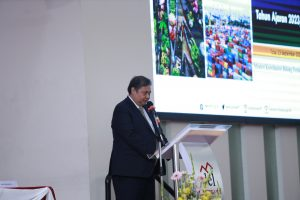
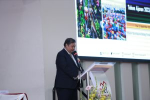
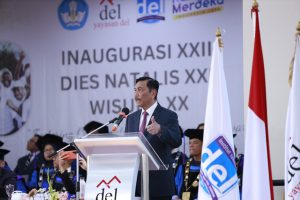
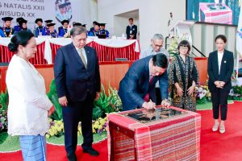
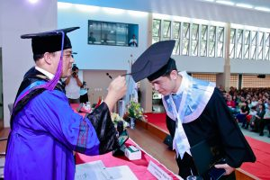
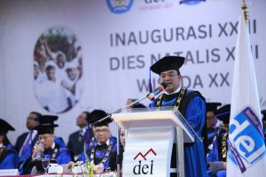
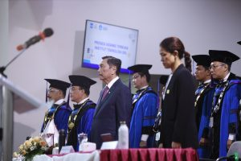

Wisuda 398 Lulusan Institut Teknologi Del
September 25 2023

Pada Hari Sabtu 23 September 2023, Institut Teknologi Del melaksanakan Wisuda untuk 398 Mahasiswa Sarjana
dan Diploma. Turut hadir Bapak Dr. Honoris Causa Ir. Airlangga Hartarto, MBA, MMT (Menteri Koordinator
Bidang Perekonomian Republik Indonesia), Bapak Rionald Silaban (Direktorat Jendral Kekayaan Negara), Bapak
Jend. TNI (Purn.) Luhut Binsar Pandjaitan, M.P.A (Ketua Pembina Yayasan Del), Ibu Intan Simanjuntak (Ketua
Pengurus Yayasan Del), dan tamu undangan lainnya. Kegiatan Wisuda ini dilaksanakan di Gedung Serba Guna
Yayasan Del dengan tema “Fostering Collaboration and Innovation towards Research Excellence”.
Pada Wisuda tahun ini terdapat sebanyak 398 wisudawan dan wisudawati yang terdiri dari 51 mahasiswa dari
jurusan D3 Teknologi Informasi, 47 mahasiswa dari jurusan D3 Teknologi Komputer, 64 mahasiswa dari jurusan
D4 Teknologi Rekayasa Perangkat Lunak, 66 mahasiswa dari jurusan S1 Informatika, 71 mahasiswa dari jurusan
S1 Sistem Informasi, 35 mahasiswa dari jurusan S1 Teknik Elektro, 44 mahasiswa dari jurusan S1 Manajemen
Rekayasa, dan 20 mahasiswa dari jurusan S1 Teknik Bioproses.
 

Prof. Stella Cristie, Ph.d (Tsinghua University) dalam kesempatan ini memberikan Orasi Ilmiah kepada para
Wisudawan. Beliau menyampaikan kepada para wisudawan bahwa kehidupan selanjutnya adalah problem solving
series yaitu fase yang harus dapat menganalisa atau memahami persoalan – persoalan yang ada serta bisa
menyelesaikan persoalan tersebut secara sistematis dan sampai selesai. Karena setiap persoalan ataupun
masalah pasti memiliki lebih dari satu jalan keluar. Terakhir beliau berpesan kepada wisudawan “Waktu anda
memulai perkuliahan begitu bangganya anda bisa berkuliah di IT Del, sekarang IT Del yang bangga kepada
kalian.”
Pada kesempatan ini Menteri Koordinator Bidang Perekonomian Dr. (H.C.) Ir. Airlangga Hartarto, M.B.A.,
M.M.T, memberikan ucapan selamat kepada wisudawan dan menyampaikan bahwa wisuda adalah hari bersejarah
karena setelah ini akan terjun ke masyarakat secara langsung. Dalam sambutannya beliau juga memaparkan
terkait pertumbuhan ekonomi di Indonesia yang akan terus positif dan sudah termasuk ke dalam upper – middle
income country, untuk itu diharapkan kedepannya alumni dari IT Del dapat berperan dalam pembangunan
Indonesia menuju Indonesia Emas (Maju, Mandiri, Sejahtera).


Sebagai Pembina Yayasan Del yang sangat mendukung dunia Pendidikan, Bapak Luhut Pandjaitan selalu berpesan
kepada mahasiswa IT Del agar tidak hanya soal pintar tetapi juga dengan hati. “Selamat bertugas, permulaan
dari suatu perjalanan yang panjang buat kalian yang telah menyelesaikan studinya di IT Del.” pesan Beliau.
Pada kegiatan ini juga berlangsung penandatanganan prasasti Laboratorium Keamanan Siber oleh Bapak Menteri
Koordinator Bidang Perekonomian Dr. (H.C.) Ir. Airlangga Hartarto, M.B.A., M.M.T dan Bapak Jend. TNI (Purn.)
Luhut Binsar Pandjaitan, M.P.A (Ketua Pembina Yayasan Del). Besar harapannya dengan keberadaan Laboratorium
ini dapat mendukung IT Del dalam menciptakan talent-talent baru dalam bidang keamanan siber di Indonesia.



